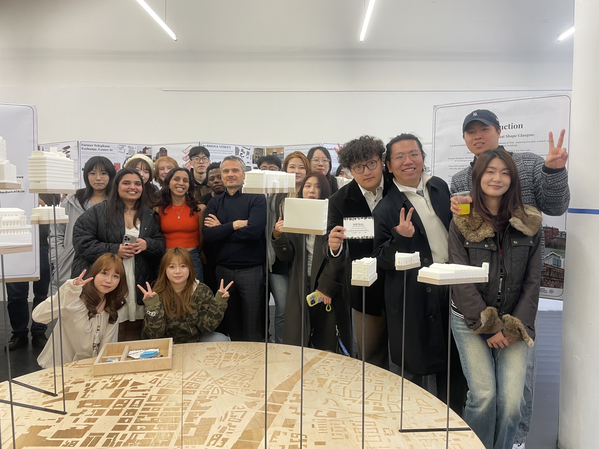
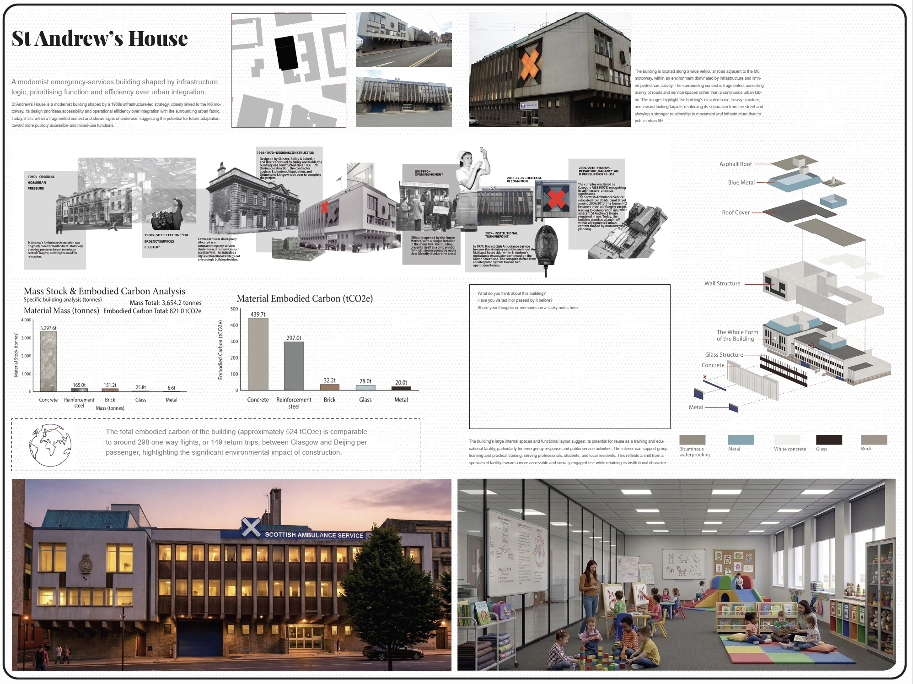
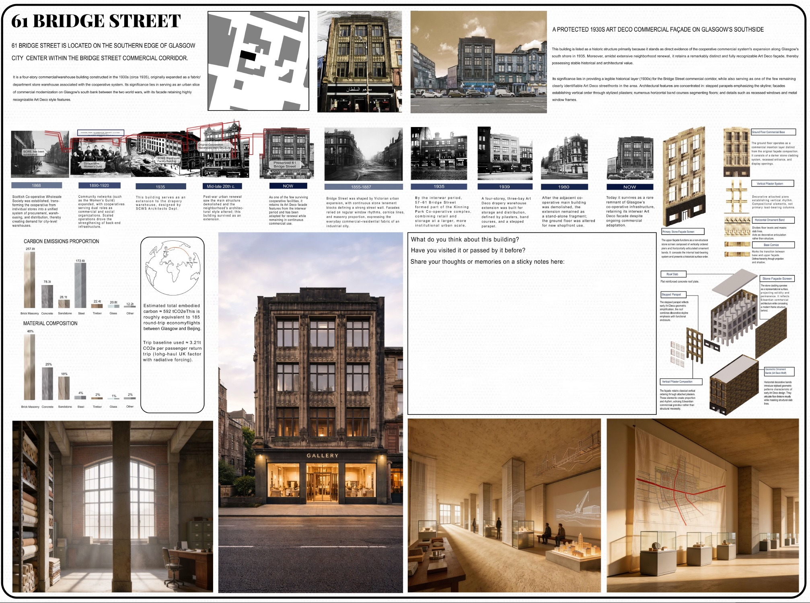
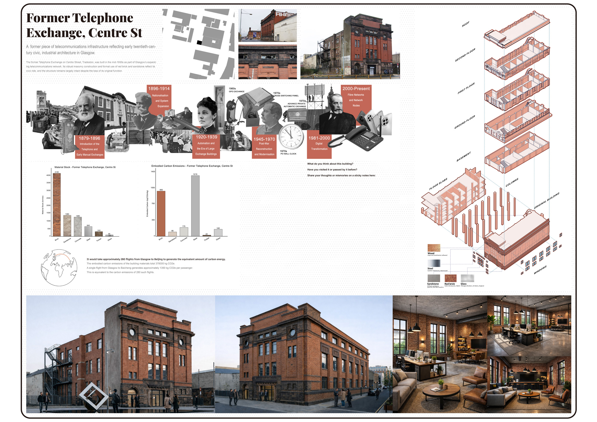
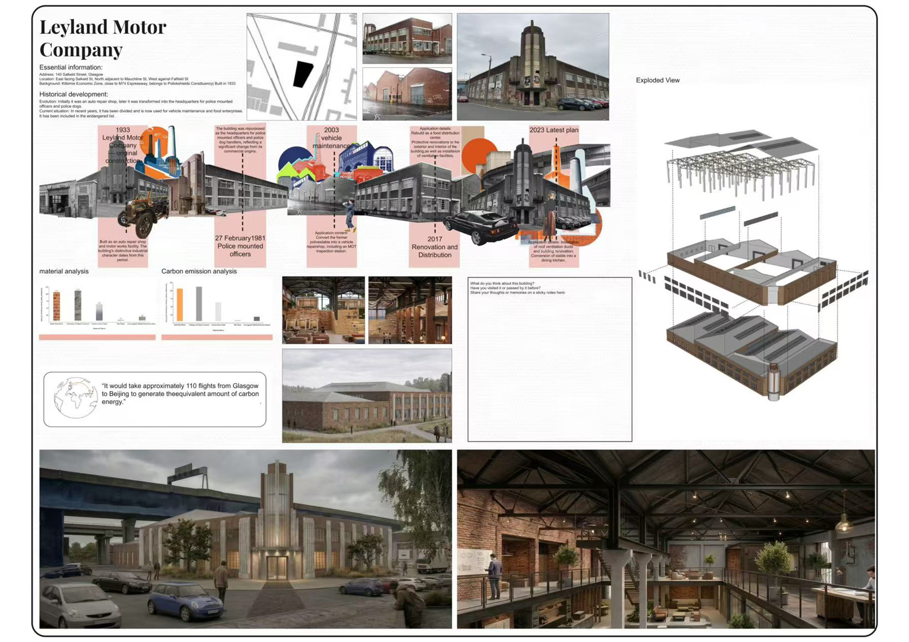
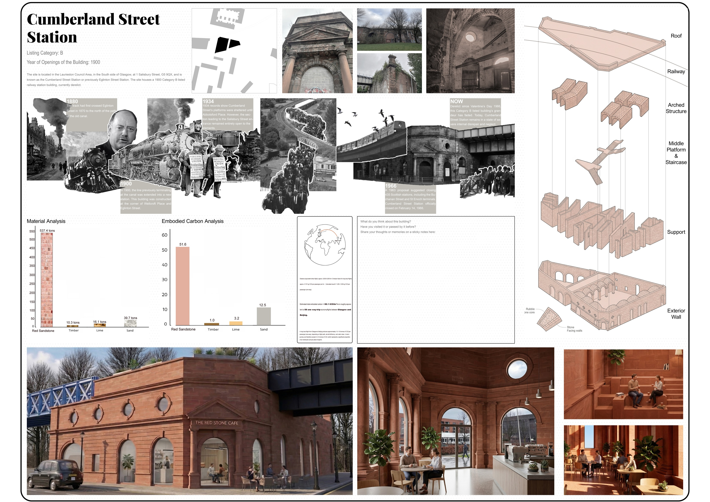
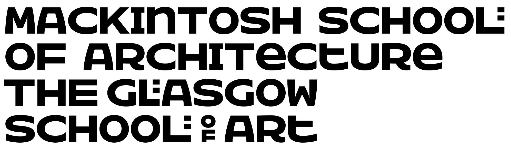
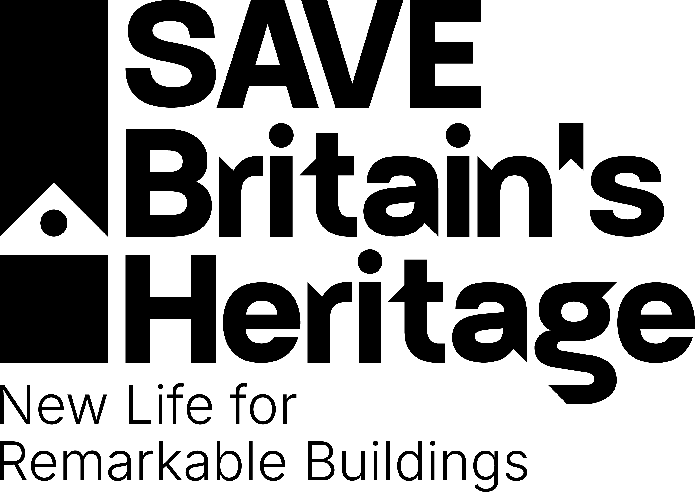

Panel 01 — Building / Theme Title


Some buildings fade slowly. Not from memory, but from use.
Across Glasgow, structures that once shaped daily life now stand quiet. Their walls still hold echoes of movement and gathering. Their façades remain stitched into the city’s streetscape.
They have stood for generations, long enough to become more than architecture. They are part of how the city remembers itself. Though marked as “at risk,” they are not empty of meaning. They carry stories, attachment and identity.
This exhibition — and the models on display — looks at ten buildings currently listed on Glasgow’s Buildings at Risk Register. Each panel explores the story of one building, its history, its role in the city and its value as part of Glasgow’s existing material fabric. These buildings also represent a significant store of embodied carbon, reminding us that repair and reuse are not only cultural choices, but environmental ones.
Through archival research, mapping and proposals for adaptive reuse, student teams imagine how these buildings might be repaired, reactivated and reconnected to the life of the city.
They are not ruins.
They are stories that shape Glasgow.











We would be very pleased to hear your thoughts on the exhibition, the buildings, and the questions raised by the students’ work.
Comments are collected through Microsoft Forms and will be stored securely for teaching, research and public engagement purposes.